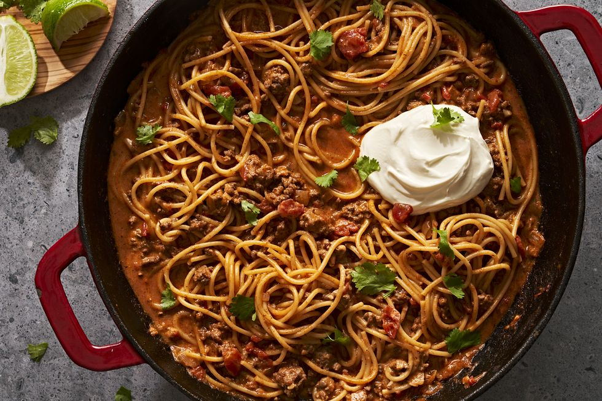

Taco Spaghetti

Yummy taco spaghetti pasta
The one-pot taco spaghetti is a fast weeknight
dinner that serves your taco cravings with
spaghetti rather than taco shells. It's the pefrect
recipe for those tiresome nights where you just
can't picture a sink full of dirty dishes.
Ingredients
- 450 g of lean ground beef
- 1 small yellow onion, diced
- 4 cloves of garlic, finely chopped
- 4 cups of water
- 1 can of diced tomatoes
- 2 tbsp of taco seasoning
- 8 oz. spaghetti
- 4 oz. of American cheese, cut into pieces
- 4 oz. of sharp cheddar cheese, shredded
- 1/2 cup chopped fresh cilantro
- Sour cream, for serving
Steps
- Over medium heat, cook ground beef, onion and garlic for 5-6 minutes. Add water, tomatoes and taco seasoning, then bring to a boil.
- Break spaghetti in half and add to sauce. Reduce heat to medium and simmer for 12-14 minutes.
- Remove from heat and stir in american, cheddar and cilantro until all cheese is melted.
- Serve immediately, topped with fresh chopped cilantro and sour cream.